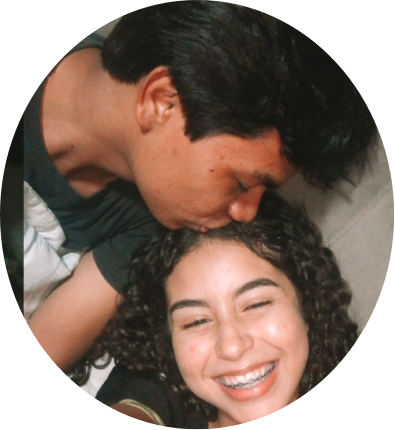

Fernanda & Gabriel
Somos mais felizes juntos com Jesus

Se nos amamos?
Nos amamos de uma maneira inexplicável,
Nos amamos de uma forma inconfesssável e de um modo
contraditório. No amamos inconpreenssívelmente, sem nos perguntar o porquê nos amamos, sem
nos importar com porquê nos amamos, sem nos questionar o porquê nos amamos. Quanto mais velhos ficamos
Com mais amor nos amamos!